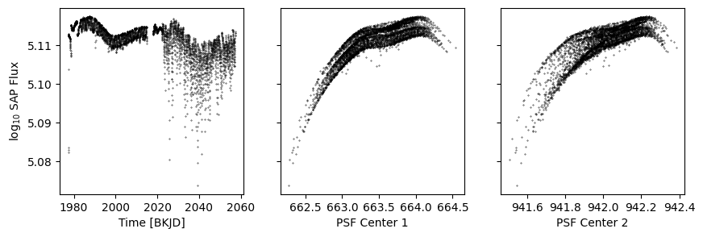
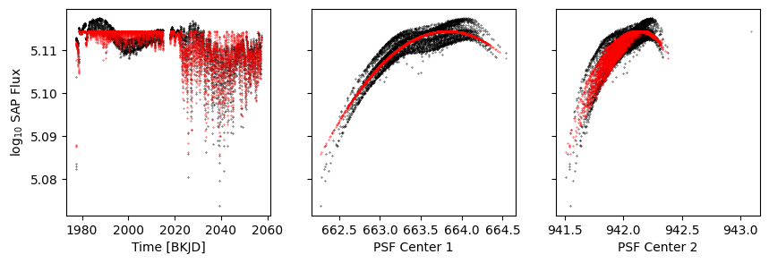
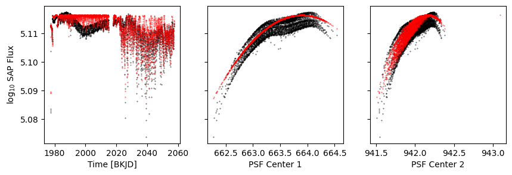
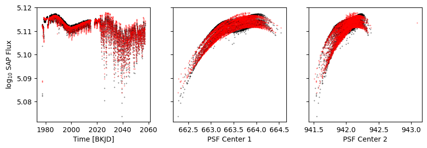
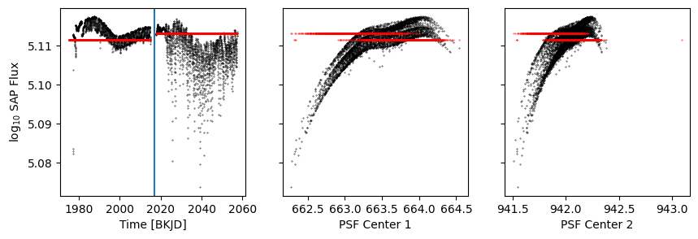
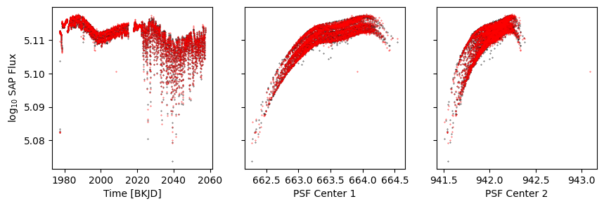
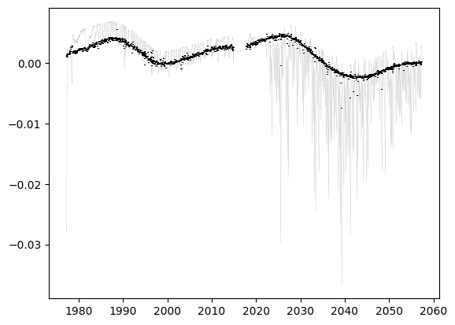
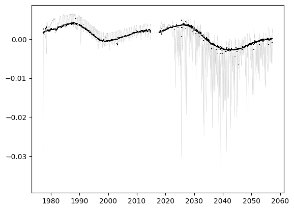
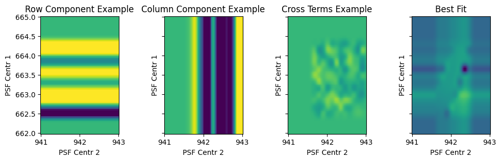
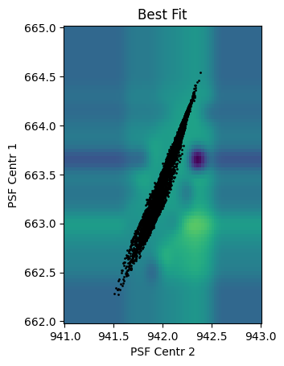

Fitting NASA K2 time-series to remove systematics#
[1]:
import numpy as np
from astropy.io import fits
[4]:
hdulist = fits.open('data/k2.fits')
[5]:
attrs = ['time', 'sap_flux', 'sap_flux_err', 'sap_quality', 'psf_centr1', 'psf_centr2']
d = {attr:hdulist[1].data[attr] for attr in attrs}
d['sap_quality'] = (d['sap_quality'] & 82239) == 0
d['sap_quality'] &= np.isfinite(d['sap_flux'])
d['sap_quality'] &= np.isfinite(d['sap_flux_err'])
Looking at the dataset#
[6]:
import numpy as np
import matplotlib.pyplot as plt
[7]:
def get_plot():
k = d['sap_quality']
fig, axs = plt.subplots(1, 3, figsize=(10, 3), sharey=True)
axs[0].scatter(d['time'][k], np.log10(d['sap_flux'][k]), s=0.1, c='k')
axs[1].scatter(d['psf_centr1'][k], np.log10(d['sap_flux'][k]), s=0.1, c='k')
axs[2].scatter(d['psf_centr2'][k], np.log10(d['sap_flux'][k]), s=0.1, c='k')
axs[0].set(ylabel='log$_{10}$ SAP Flux', xlabel='Time [BKJD]')
axs[1].set(xlabel='PSF Center 1')
axs[2].set(xlabel='PSF Center 2')
return fig, axs
[8]:
get_plot();

[9]:
data = np.log10(d['sap_flux'])
errors = d['sap_flux_err'] / (d['sap_flux'] * np.log(10))
Model 1: A simple polynomial in row position#
[10]:
from lamatrix import Polynomial, Constant
[11]:
p1 = Polynomial('r', 4)
p = p1 + Constant()
[12]:
p.fit(data=data, errors=errors, mask=d['sap_quality'], r=d['psf_centr1'])
/Users/chedges/Pandora/repos/lamatrix/src/lamatrix/model.py:326: RuntimeWarning: invalid value encountered in sqrt
fit_std = self.cov.diagonal() ** 0.5
[13]:
model = p.evaluate(r=d['psf_centr1'])
[14]:
k = d['sap_quality']
fig, axs = get_plot()
axs[0].scatter(d['time'], model, s=0.1, c='r')
axs[1].scatter(d['psf_centr1'], model, s=0.1, c='r')
axs[2].scatter(d['psf_centr2'], model, s=0.1, c='r')
[14]:
<matplotlib.collections.PathCollection at 0x1305f1970>

Model 2: A polynomial in row, and a model for the time dependent astrophysics#
[15]:
from lamatrix import Spline
[16]:
p1 = Polynomial('r', 4)
astrophysics = Spline('t', np.linspace(1970, 2060, 30))
priors = [(np.median(np.log10(d['sap_flux'][k])), 0.01)]
p = astrophysics + p1 + Constant(priors=priors)
[17]:
p.fit(data=data, errors=errors, mask=d['sap_quality'], r=d['psf_centr1'], t=d['time'])
[18]:
model = p.evaluate(r=d['psf_centr1'], t=d['time'])
[19]:
k = d['sap_quality']
fig, axs = get_plot()
axs[0].scatter(d['time'], model, s=0.1, c='r')
axs[1].scatter(d['psf_centr1'], model, s=0.1, c='r')
axs[2].scatter(d['psf_centr2'], model, s=0.1, c='r')
[19]:
<matplotlib.collections.PathCollection at 0x1306fd7c0>

[20]:
model = p[1:].evaluate(r=d['psf_centr1'], t=d['time'])
[21]:
k = d['sap_quality']
fig, axs = get_plot()
axs[0].scatter(d['time'], model, s=0.1, c='r')
axs[1].scatter(d['psf_centr1'], model, s=0.1, c='r')
axs[2].scatter(d['psf_centr2'], model, s=0.1, c='r')
[21]:
<matplotlib.collections.PathCollection at 0x1117b7fd0>

Model 3: Including step functions#
[22]:
from lamatrix import Step, DistributionsContainer
[23]:
p1 = Polynomial('r', 4)
astrophysics = Spline('t', np.linspace(1970, 2060, 30))
priors = DistributionsContainer([(np.median(np.log10(d['sap_flux'][k])), 0.01)] * 2)
s = Step('t', [2017], priors=priors)
p = astrophysics + p1 + s
[24]:
p.fit(data=data, errors=errors, mask=d['sap_quality'], r=d['psf_centr1'], t=d['time'])
[25]:
model = p.evaluate(r=d['psf_centr1'], t=d['time'])
[26]:
k = d['sap_quality']
fig, axs = get_plot()
axs[0].scatter(d['time'], model, s=0.1, c='r')
axs[1].scatter(d['psf_centr1'], model, s=0.1, c='r')
axs[2].scatter(d['psf_centr2'], model, s=0.1, c='r')
[26]:
<matplotlib.collections.PathCollection at 0x130860400>

[27]:
model = p[2].evaluate(r=d['psf_centr1'], t=d['time'])
[28]:
k = d['sap_quality']
fig, axs = get_plot()
axs[0].scatter(d['time'], model, s=0.1, c='r')
axs[1].scatter(d['psf_centr1'], model, s=0.1, c='r')
axs[2].scatter(d['psf_centr2'], model, s=0.1, c='r')
axs[0].axvline(2017)
[28]:
<matplotlib.lines.Line2D at 0x130a545e0>

Model 4: Splines in time, row positon, and column position.#
[29]:
p1 = Spline('r', np.linspace(np.nanmin(d['psf_centr1']), np.nanmax(d['psf_centr1']), 15))
p2 = Spline('c', np.linspace(np.nanmin(d['psf_centr2']), np.nanmax(d['psf_centr2']), 15))
astrophysics = Spline('t', np.linspace(1970, 2060, 30))
priors = DistributionsContainer([(np.median(np.log10(d['sap_flux'][k])), 0.01)] * 2)
s = Step('t', [2017], priors=priors)
p1.priors = DistributionsContainer([(0, 0.1)] * p1.width)
p2.priors = DistributionsContainer([(0, 0.1)] * p1.width)
p = astrophysics + p1 + p2 + s
[30]:
p.fit(data=data, errors=errors, mask=d['sap_quality'], r=d['psf_centr1'], c=d['psf_centr2'], t=d['time'])
[31]:
model = p.evaluate(r=d['psf_centr1'], c=d['psf_centr2'], t=d['time'])
[32]:
k = d['sap_quality']
fig, axs = get_plot()
axs[0].scatter(d['time'], model, s=0.1, c='r')
axs[1].scatter(d['psf_centr1'], model, s=0.1, c='r')
axs[2].scatter(d['psf_centr2'], model, s=0.1, c='r')
[32]:
<matplotlib.collections.PathCollection at 0x130acc850>

[33]:
model = p[1:].evaluate(r=d['psf_centr1'], c=d['psf_centr2'], t=d['time'])
[34]:
fig, ax = plt.subplots()
ax.errorbar(d['time'][k], (data - np.nanmedian(model))[k], errors[k], c='grey', zorder=-1, lw=0.1)
ax.errorbar(d['time'][k], (data - model)[k], errors[k], c='k', ls='', zorder=10)
[34]:
<ErrorbarContainer object of 3 artists>

[35]:
p.equation
[35]:
\[f(\mathbf{r}, \mathbf{c}, \mathbf{t}) = w_{0} N_{1, {3}}(\mathbf{t}) + w_{1} N_{2, {3}}(\mathbf{t}) + w_{2} N_{3, {3}}(\mathbf{t}) + w_{3} N_{4, {3}}(\mathbf{t}) + w_{4} N_{5, {3}}(\mathbf{t}) + w_{5} N_{6, {3}}(\mathbf{t}) + w_{6} N_{7, {3}}(\mathbf{t}) + w_{7} N_{8, {3}}(\mathbf{t}) + w_{8} N_{9, {3}}(\mathbf{t}) + w_{9} N_{10, {3}}(\mathbf{t}) + w_{10} N_{11, {3}}(\mathbf{t}) + w_{11} N_{12, {3}}(\mathbf{t}) + w_{12} N_{13, {3}}(\mathbf{t}) + w_{13} N_{14, {3}}(\mathbf{t}) + w_{14} N_{15, {3}}(\mathbf{t}) + w_{15} N_{16, {3}}(\mathbf{t}) + w_{16} N_{17, {3}}(\mathbf{t}) + w_{17} N_{18, {3}}(\mathbf{t}) + w_{18} N_{19, {3}}(\mathbf{t}) + w_{19} N_{20, {3}}(\mathbf{t}) + w_{20} N_{21, {3}}(\mathbf{t}) + w_{21} N_{22, {3}}(\mathbf{t}) + w_{22} N_{23, {3}}(\mathbf{t}) + w_{23} N_{24, {3}}(\mathbf{t}) + w_{24} N_{25, {3}}(\mathbf{t}) + w_{25} N_{26, {3}}(\mathbf{t}) + w_{26} N_{1, {3}}(\mathbf{r}) + w_{27} N_{2, {3}}(\mathbf{r}) + w_{28} N_{3, {3}}(\mathbf{r}) + w_{29} N_{4, {3}}(\mathbf{r}) + w_{30} N_{5, {3}}(\mathbf{r}) + w_{31} N_{6, {3}}(\mathbf{r}) + w_{32} N_{7, {3}}(\mathbf{r}) + w_{33} N_{8, {3}}(\mathbf{r}) + w_{34} N_{9, {3}}(\mathbf{r}) + w_{35} N_{10, {3}}(\mathbf{r}) + w_{36} N_{11, {3}}(\mathbf{r}) + w_{37} N_{1, {3}}(\mathbf{c}) + w_{38} N_{2, {3}}(\mathbf{c}) + w_{39} N_{3, {3}}(\mathbf{c}) + w_{40} N_{4, {3}}(\mathbf{c}) + w_{41} N_{5, {3}}(\mathbf{c}) + w_{42} N_{6, {3}}(\mathbf{c}) + w_{43} N_{7, {3}}(\mathbf{c}) + w_{44} N_{8, {3}}(\mathbf{c}) + w_{45} N_{9, {3}}(\mathbf{c}) + w_{46} N_{10, {3}}(\mathbf{c}) + w_{47} N_{11, {3}}(\mathbf{c}) + w_{48} \mathbb{I}_{[{-\infty}, {2017}]}(\mathbf{t}) + w_{49} \mathbb{I}_{[{2017}, {\infty}]}(\mathbf{t})\]
Model 6: Including cross terms#
[36]:
p1 = Spline('r', np.linspace(np.nanmin(d['psf_centr1']), np.nanmax(d['psf_centr1']), 15))
p2 = Spline('c', np.linspace(np.nanmin(d['psf_centr2']), np.nanmax(d['psf_centr2']), 15))
astrophysics = Spline('t', np.linspace(1970, 2060, 30))
priors = DistributionsContainer([(np.median(np.log10(d['sap_flux'][k])), 0.01)] * 2)
s = Step('t', [2017], priors=priors)
p1.priors = DistributionsContainer([(0, 0.1)] * p1.width)
p2.priors = DistributionsContainer([(0, 0.1)] * p1.width)
p = astrophysics + p1 + p2 + p1 * p2 + s
[37]:
p
[37]:
JointModel
Spline(t)[n, 27]
Spline(r)[n, 12]
Spline(c)[n, 12]
CrosstermModel(r, c)[n, 144]
Step(t)[n, 2]
[38]:
p.fit(data=data, errors=errors, mask=d['sap_quality'], r=d['psf_centr1'], c=d['psf_centr2'], t=d['time'])
[39]:
model = p.evaluate(r=d['psf_centr1'], c=d['psf_centr2'], t=d['time'])
[40]:
k = d['sap_quality']
fig, axs = get_plot()
axs[0].scatter(d['time'], model, s=0.1, c='r')
axs[1].scatter(d['psf_centr1'], model, s=0.1, c='r')
axs[2].scatter(d['psf_centr2'], model, s=0.1, c='r')
[40]:
<matplotlib.collections.PathCollection at 0x131a58a00>
[41]:
model = p[1:].evaluate(r=d['psf_centr1'], c=d['psf_centr2'], t=d['time'])
[42]:
fig, ax = plt.subplots()
ax.errorbar(d['time'][k], (data - np.nanmedian(model))[k], errors[k], c='grey', zorder=-1, lw=0.1)
ax.errorbar(d['time'][k], (data - model)[k], errors[k], c='k', ls='', zorder=10)
[42]:
<ErrorbarContainer object of 3 artists>

[43]:
R, C = np.mgrid[662:665:80j, 941:943:79j]
[44]:
p[1]
[44]:
Spline(r)[n, 12]
[45]:
p[1].priors
[45]:
DistributionContainer
[(0, 0.1), (0, 0.1), (0, 0.1), (0, 0.1), (0, 0.1), (0, 0.1), (0, 0.1), (0, 0.1), (0, 0.1), (0, 0.1), (0, 0.1), (0, 0.1)]
[46]:
p[1].priors.sample()
[46]:
array([ 0.16692599, 0.06418931, -0.03082698, -0.06964058, 0.1366119 ,
0.09558837, -0.19841951, -0.05788737, -0.15226211, 0.15364012,
-0.05229935, 0.09449464])
[47]:
fig, ax = plt.subplots(1, 4, sharex=True, sharey=True, figsize=(12, 3))
w = p[1].priors.sample()
ax[0].pcolormesh(C, R, p[1].design_matrix(r=R).dot(w), vmin=-0.1, vmax=0.05)
ax[0].set(xlabel='PSF Centr 2', ylabel='PSF Centr 1', aspect='equal', title='Row Component Example')
w = p[2].priors.sample()
ax[1].pcolormesh(C, R, p[2].design_matrix(c=C).dot(w), vmin=-0.1, vmax=0.05)
ax[1].set(xlabel='PSF Centr 2', ylabel='PSF Centr 1', aspect='equal', title='Column Component Example')
w = p[3].priors.sample()
ax[2].pcolormesh(C, R, p[3].design_matrix(r=R, c=C).dot(w), vmin=-0.1, vmax=0.05)
ax[2].set(xlabel='PSF Centr 2', ylabel='PSF Centr 1', aspect='equal', title='Cross Terms Example')
w = p[1:-1].posteriors.mean
ax[3].pcolormesh(C, R, p[1:-1].design_matrix(t=R**0 * 2010, r=R, c=C).dot(w), vmin=-0.05, vmax=0.1)
ax[3].set(xlabel='PSF Centr 2', ylabel='PSF Centr 1', aspect='equal', title='Best Fit')
[47]:
[Text(0.5, 0, 'PSF Centr 2'),
Text(0, 0.5, 'PSF Centr 1'),
None,
Text(0.5, 1.0, 'Best Fit')]

[48]:
fig, ax = plt.subplots()
w = p[1:-1].posteriors.mean
ax.pcolormesh(C, R, p[1:-1].design_matrix(t=R**0 * 2010, r=R, c=C).dot(w), vmin=-0.05, vmax=0.1)
ax.set(xlabel='PSF Centr 2', ylabel='PSF Centr 1', aspect='equal', title='Best Fit')
ax.scatter(d['psf_centr2'][k], d['psf_centr1'][k], c='k', s=1)
[48]:
<matplotlib.collections.PathCollection at 0x1416a18e0>

[49]:
p.save('test.json')